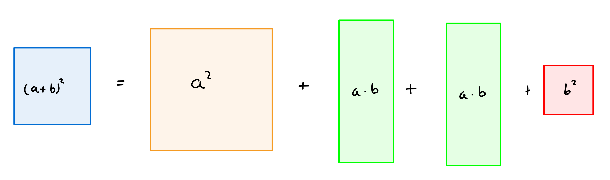
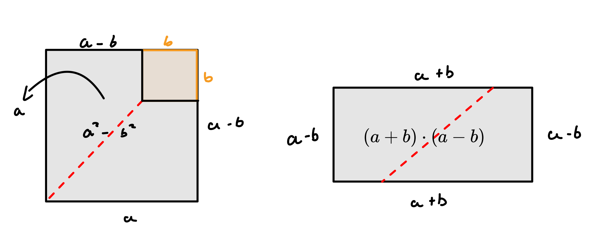

Die erste binomische Formel (a + b)² = a² + 2ab + b² lässt sich
ganz einfach an ein paar Quadraten veranschaulichen. Das
erste Quadrat hat die
Seitenlänge a und somit den Flächeninhalt A = a².
Zu diesem wird ein weiteres
Quadrat addiert und an den
Seiten zu einer großen Fläche ergänzt:
Das entstandene Quadrat hat somit die Seitelänge a + b und damit den
Flächenninhalt (a + b)²
Wie man sieht, sind nun noch zwei weitere Bereiche entstanden. Hier
dargestellt als
grüne Rechtecke.
Diese Rechtecke haben die Seiten a und b und somit einen Flächeninhalt
von A = a*b oder A = ab
Wenn man diese ganzen Flächeninhalte miteinander addiert, kommt man auf die Formel für die erste binomische Formel:

Die zweite binomische Formel (a - b)² = a² - 2ab + b² ähnelt sich
zwar vom Aufbau sehr stark zur ersten, allerdings ist es graphisch
gesehen genau das Gegenteil.
Dieses mal wird nämlich ein Quadrat von dem anderem abgezogen:
Das
erste Quadrat hat erneut die
Seitenlänge a und somit den Flächeninhalt A = a².
Von diesem wird ein weiteres
Quadrat subtrahiert und
somit entsteht folgendes Schaubild:
Der Flächenninhalt des Gesamten Qaudrates ändert sich somit zu
(a - b)²
Wie man sieht, sind nun wiedermal
zwei weitere Rechtecke
entstanden.
Wir wissen bereits, dass diese Rechtecke den Flächeninhalt A = ab
haben. Dadurch kannst du dir erschließen, dass ein Teil der Formel a² -
2ab heißen muss.
Allerdings überschneiden sich die beiden Rechtecke. Deswegen muss das
Feld indem sich die Beiden Flächen überschneiden wieder dazu addiert
werden. Die Seitenlänge des
Quadrats, welches wir
addieren müssen, ist b und somit fügen wir der Formel b² hinzu:
(a - b)² = a² - 2ab + b²
Bei der dritten Binomischen Formel
a² + b² = (a + b) * (a + b) geht es ähnlich wie bei der zweiten.
Es werden wieder zwei Quadrate voneinander Subtrahiert:
Daraufhin kann man nun die Fläche in der Diagonale teilen und zu einem Rechteck zusammenfassen:
Wenn man nun den Flächeninhalt von einem Rechteck aus den beiden Seiten aufstellt kommt man auf die folgende Formel:
a² + b² = (a + b) * (a - b)